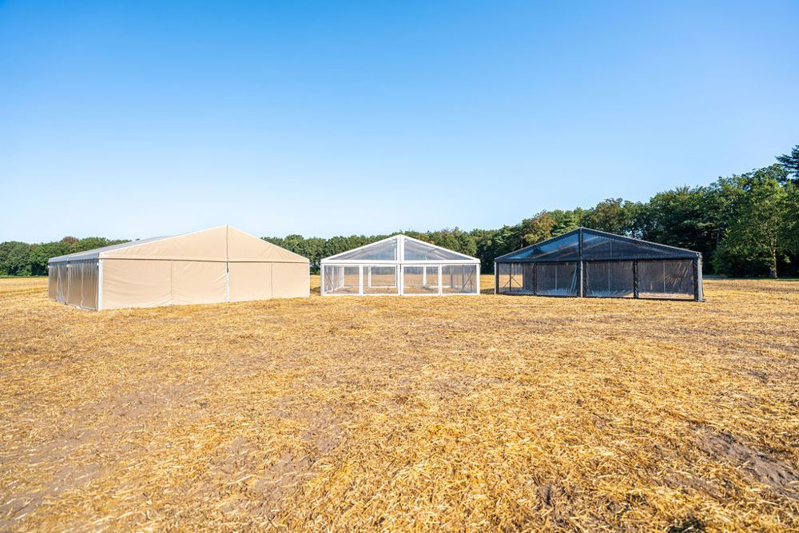
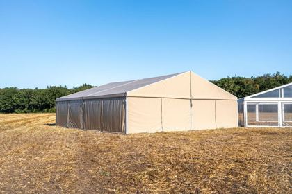
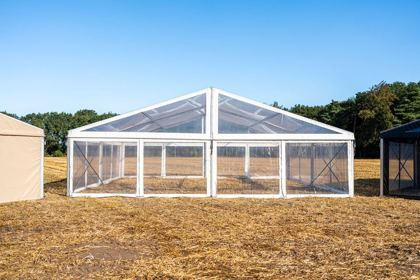
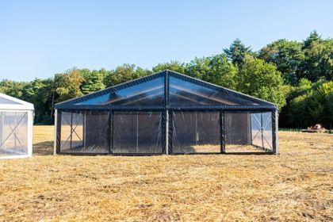
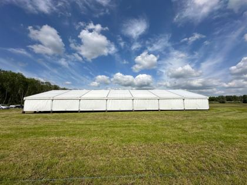
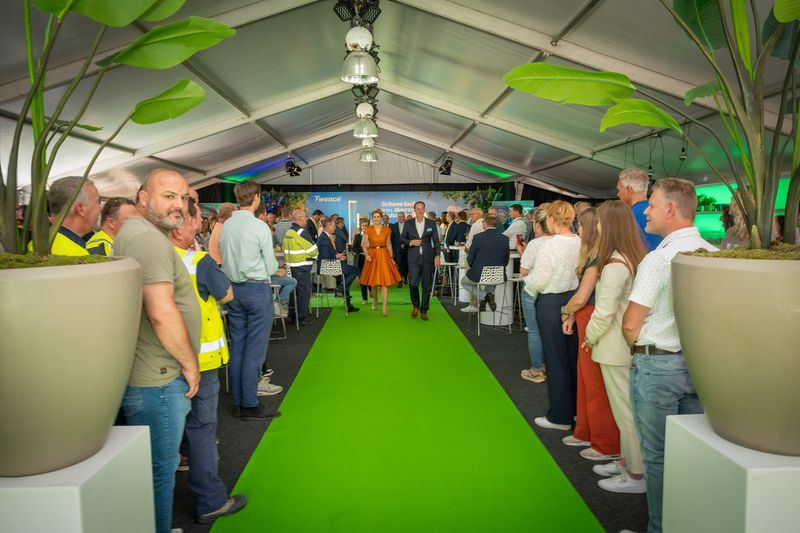

Een aluhal huur je voor een event dat moet kloppen: een bedrijfsfeest, beurs, festival of tijdelijke opslag. Het zelfdragende aluminium frame heeft geen palen in het midden, dus je deelt de hele ruimte vrij in. Wij leveren en bouwen de hal met onze eigen ploeg, vanuit Deventer in heel Oost-Nederland.
Standaard een witte aluhal met witte zijwanden, inclusief transport en op- en afbouw door onze eigen ploeg.
Prijsindicatie: vanaf € ... voor een hal van 10 x 15 m
We reageren binnen ... werkdag met een offerte op maat.





Welke foto's komen hier, in één lijn?
Een aluhal kies je als je veel vrije ruimte nodig hebt, een strakke uitstraling wilt en de tent tegen wind en weer moet kunnen. Dit zijn de klussen waar we hem het meest voor bouwen.
Ruimte voor honderden gasten, met vloer, verlichting en verwarming erbij. Geen palen in het zicht, dus podium, bar en tafels zet je waar je wilt.
Voor horeca, backstage of de hoofdtent. We bouwen volgens de regels en leveren het bouwboek dat de gemeente en de brandweer vragen.
Transparante zijwanden en glazen deuren geven een hal met de uitstraling van een vaste locatie. Zoals bij de opening van Twence in Enschede.
Droog en afsluitbaar voor bouw, industrie of agrarisch gebruik. Huur per week of per maand?
Met dichte zijwanden en kachels is een aluhal ook in december een warme plek. Bekijk onze verwarmde tenten.
Ook voor een bruiloft of groot privéfeest bouwen we graag een aluhal.
Reken op 1 m² per persoon als gasten staan en 1,5 m² per persoon aan tafels. Een aluhal van 10 x 15 meter biedt zo plek aan ongeveer 150 mensen staand of 100 mensen aan tafels. Een podium, bar of buffet vraagt extra ruimte.
| Maat | Oppervlak | Staand | Aan tafels | Nokhoogte |
|---|---|---|---|---|
| 5 x 10 m | 50 m² | ca. 50 | ca. 35 | ... m |
| 8 x 15 m | 120 m² | ca. 120 | ca. 80 | ... m |
| 10 x 15 m | 150 m² | ca. 150 | ca. 100 | ... m |
| 10 x 25 m | 250 m² | ca. 250 | ca. 165 | ... m |
| 15 x 25 m | 375 m² | ca. 375 | ca. 250 | ... m |
| 15 x 40 m | 600 m² | ca. 600 | ca. 400 | ... m |
Kloppen deze maten met wat jullie standaard hebben, en wat is de grootste aluhal die jullie bouwen?
Twijfel je over de maat? Lees welke tent je kiest voor hoeveel personen of vraag het ons.
| Breedte | 5, 8, 10 of 15 m, andere maten op aanvraag |
|---|---|
| Lengte | Per segment van 5 m te verlengen |
| Zijhoogte | 2,3 m, 3 m of 4,5 m |
| Nokhoogte | ... m, afhankelijk van de breedte |
| Kleur dak | Wit, zand of transparant |
| Zijwanden | Wit, zand, mosgroen, transparant wit of transparant zwart |
| Verankering | Haringen, ballastblokken of op een zwaarlastvloer |
| Ondergrond | Gras, klinkers, asfalt, zand? |
| Koppelen | Met een pagodetent als entree of garderobe |
Bij ons huur je niet alleen de hal. We leveren alles wat erbij hoort en bouwen het in één keer op.

Voorbeeldproject
Voor de opening van de nieuwe CO2-afvanginstallatie van Twence in Enschede, met Koningin Máxima als eregast, bouwden we een aluhal van 15 bij 25 meter op een waterpas zwaarlastvloer. Transparante zijwanden voor daglicht, glazen deuren bij de entree en een pagodetent ernaast als garderobe.
Bekijk het projectBij een evenement met publiek vraagt de gemeente vaak om een bouwboek, en soms komt de brandweer keuren. Wij bouwen elke aluhal volgens de regels en leveren het bouwboek mee.
Meer weten? Lees of je een vergunning nodig hebt voor een tent.
We werken vanuit Deventer in heel Oost-Nederland, zoals Zwolle, Apeldoorn, Enschede, Arnhem en de Achterhoek. Voor grotere klussen komen we ook verder.
5,0 op Google
"Quote van een zakelijke klant over een aluhal."
Naam, bedrijf
Reken op 1 m² per persoon staand en 1,5 m² aan tafels. Een hal van 10 x 15 meter is genoeg voor ongeveer 150 mensen staand of 100 aan tafels. Omdat je de aluhal per 5 meter verlengt, maken we hem zo groot als jouw event vraagt.
De prijs hangt af van de maat, de duur, de vloer en de opties. Een hal van 10 x 15 m huur je vanaf € ... In wat kost een tent huren lees je waar de prijs van afhangt. Een offerte is altijd vrijblijvend.
Dat hangt af van de gemeente, de grootte en of er publiek komt. Bij grotere tenten vraagt de gemeente vaak om een bouwboek. Dat leveren wij mee. Lees meer in heb ik een vergunning nodig voor een tent.
Een hal van 10 x 15 m bouwen we in ... Bij grotere hallen of een zwaarlastvloer rekenen we ...
Op gras zetten we de hal vast met haringen, op verharding met ballastblokken. Wil je een vlakke, droge vloer, dan komt de hal op een zwaarlastvloer. Aanvullen: ondergronden waar het niet kan? Lees ook haringen of betonnen ballast.
Ja. Met dichte zijwanden, een vloer en kachels is een aluhal ook in de winter goed warm te houden. Bekijk onze verwarmde tenten.
Voor events in mei tot en met september raden we ... weken vooruit aan. In de rustige maanden kan het vaak sneller.
Vertel ons de datum, de plaats en het aantal gasten. Dan krijg je een offerte op maat, met alles wat erbij hoort.
Welke foto's komen hier, in één lijn?
Een zelfdragend aluminium frame zonder palen in het midden: veel vrije ruimte, een strakke uitstraling en bestand tegen wind en weer. Wij leveren en bouwen hem met onze eigen ploeg, vanuit Deventer in heel Oost-Nederland.
Wit met witte zijwanden, inclusief transport, op- en afbouw. Vanaf € ... voor 10 x 15 m
Reken op 1 m² per persoon staand en 1,5 m² aan tafels. Een hal van 10 x 15 meter past dus ongeveer 150 mensen staand of 100 aan tafels.
| Maat | Staand | Aan tafels | Nokhoogte |
|---|---|---|---|
| 8 x 15 m | ca. 120 | ca. 80 | ... m |
| 10 x 15 m | ca. 150 | ca. 100 | ... m |
| 15 x 25 m | ca. 375 | ca. 250 | ... m |
| 15 x 40 m | ca. 600 | ca. 400 | ... m |
Kloppen deze maten, en wat is de grootste aluhal? Twijfel je? Lees welke tent je kiest voor hoeveel personen.
Weet je de maat?
Vraag een offerte aan. Datum en plaats invullen is genoeg, de rest stemmen we samen af.
of bel 06 57 83 57 94
Voorbeeldproject
Voor de opening van de CO2-afvanginstallatie van Twence, met Koningin Máxima als eregast. Op een waterpas zwaarlastvloer, met transparante zijwanden, glazen deuren en een pagodetent als garderobe.
Bekijk het project| Breedte | 5, 8, 10 of 15 m, andere maten op aanvraag |
|---|---|
| Lengte | Per segment van 5 m |
| Zijhoogte | 2,3 m, 3 m of 4,5 m |
| Nokhoogte | ... m per breedte |
| Kleur dak | Wit, zand of transparant |
| Zijwanden | Wit, zand, mosgroen, transparant wit of zwart |
| Verankering | Haringen, ballastblokken of zwaarlastvloer |
Dat hangt af van de maat, de huurduur, de vloer en de opties. Een hal van 10 x 15 m huur je vanaf € ... Lees wat kost een tent huren, of vraag een vrijblijvende offerte aan.
Dat hangt af van de gemeente, de grootte en of er publiek komt. Bij grotere tenten vraagt de gemeente vaak om een bouwboek: dat leveren wij mee. Ons team is VCA-gecertificeerd, ons materieel is gekeurd en we zijn lid van de TVD. Lees ook heb ik een vergunning nodig voor een tent.
Een hal van 10 x 15 m staat in ... Bij een grotere hal of met zwaarlastvloer rekenen we ...
Op gras zetten we de hal vast met haringen, op verharding met ballastblokken. Voor een vlakke, droge vloer komt hij op een zwaarlastvloer. Waar kan het niet?
In mei tot en met september ... weken vooruit, in de winter vaak sneller. We werken vanuit Deventer in heel Oost-Nederland en komen voor grotere klussen ook verder. Week huur zonder meerprijs? Opslag per week of maand?
"Quote van een zakelijke klant over een aluhal."
★★★★★ Naam, bedrijf
Vertel ons de datum, de plaats en het aantal gasten. Dan krijg je een offerte op maat.
Wij staan klaar met de tenten, het transport en de mankracht.
We helpen je om een onvergetelijk evenement neer te zetten, dat precies op jouw wensen aansluit.
Benieuwd naar wat wij kunnen bieden?